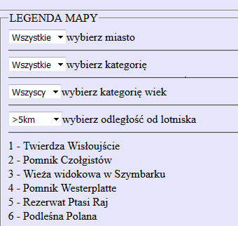

TRÓJMIEJSKI TURYSTA - interaktywny przewodnik po trójmieście
atrakcje turystyczne w trójmieście i okolicach
autor Piotr Słupczewski 2016
MAPA
WYBIERZ JĘZYK
polski
angielski
niemiecki
francuski
WYSZUKIWARKA OBIEKTÓW
wpisz nazwę poszukiwanego obiektu albo słowa kluczowe:
LEGENDA MAPY
Wszystkie
Gdańsk
Sopot
Gdynia
Inne
wybierz miasto
Wszystkie
Muzeum
Natura
Pomnik
Militaria
Sport
Jezioro
Extreme
wybierz kategorię
Wszyscy
Dzieci
Studenci
Seniorzy
wybierz kategorię wiek
>5km
5-10km
10-20km
>20km
wybierz odległość od lotniska
1 - Twierdza Wisłoujście
2 - Pomnik Czołgistów
3 - Wieża widokowa w Szymbarku
4 - Pomnik Westerplatte
5 - Rezerwat Ptasi Raj
6 - Podleśna Polana
7 - Diabelski Kamień
8 - Nowe ETI
9 - Krzyż Milenijny
10 - Park Oliwski
11 - Park im. Ronalda Reagana
12 - Stadion Energa Gdańsk
13 - Fontanna na placu Wybickiego
14 - Akwarium Gdyńskie
15 - Wieża widokowa w Kolibkach
16 - Molo w Orłowie
17 - Centrum Nauki EXPERYMENT
18 - Polanka Redłowska
19 - Molo w Brzeźnie
20 - Loopy`s World
21 - AquaPark Sopot
22 - Jump City
23 - Zoo w Oliwie
24 - Kartuzy
25 - Zamek w Łapalicach
26 - Sztutowo
27 - Rezerwat przyrody Ostrzycki Las
28 - Pole golfowe w Postołowie
29 - Mewia Łacha
30 - Kąty Rybacki
31 - Wioska Rybacka Mechelinki
32 - Elektrownia Żarnowiec
33 - Plaża w Dębkach
34 - Jezioro Bieszkowice
35 - Kamienne Kręgi w Węsiorach
36 - Jezioro Łączyno
37 - Sea Towers Gdynia
38 - Jezioro Tuchomskie
39 - Jezioro Wysockie
40 - Jezioro Otomińskie
INSTRUKCJA
Punktem odniesienia oznaczonym kropką jest Lotnisko im. Lecha Wałęsy (Lech Walesa Airport)
Kolorowe kółka oznaczają miejsca o większym zagęszczeniu atrakcji w danym obszarze. Kliknij na kolorowe kółko z liczbą atrakcji w danym rejonie w celu przybliżenia obszaru i uzyskania szczegółowych informacji o konkretnych lokalizacjach w zadanej okolicy
Obok znajduje się legenda - spis miejsc (POI) oznaczonych na mapie

Miejsca warto odwiedzenia (POI) są oznaczone "przypinkami" z oznaczeniami liczby porządkowej lokacji z listy
Poszczególne miejsca warte odwiedzenia są oznaczone znacznikami z liczbami np. 1 - Twierdza WIsłoujście, patrz legenda
Możesz ograniczyć wybór do jednego z miast lub skorzystać z filtrowania po kategoriach - W FAZIE TESTÓW
Jeżeli chcesz dodać swoje POI, skorzystaj z dostępnego narzędzia konwersji - potrzebujesz pliku CSV z współrzędnymi - PREMIUM
wszelkie prawa do tesktów oraz kodu źrodłowego zastrzeżone